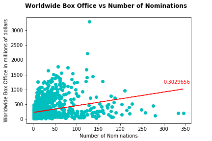

Awards Nominations Vs Box office

This is a scatter plot of number of awards nominations vs worldwide box office, there is a some correlation between the two.
However, as seen on the plot the r-square values is small at 0.303 thus the effect isn't super significant.
One big caveat, is that our data wasn't consistent across movies. Some includes many awards, while some only have the Oscars, or some only recorded wins instead of nominations.